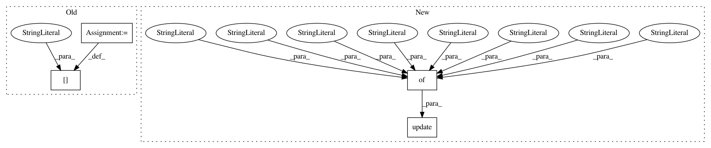

c109f295a23d7ee1b0b6ddd0a04730c144ece462,texar/modules/encoders/rnn_encoders.py,UnidirectionalRNNEncoder,default_hparams,#,100
Before Change
Name of the encoder
hparams = RNNEncoderBase.default_hparams()
hparams["rnn_cell"] = layers.default_rnn_cell_hparams()
hparams["name"] = "unidirectional_rnn_encoder"
return hparams
def _build(self, inputs, sequence_length=None, initial_state=None,
After Change
Name of the encoder
hparams = RNNEncoderBase.default_hparams()
hparams.update({
"rnn_cell": layers.default_rnn_cell_hparams(),
"output_layer": {
"num_layers": 0,
"layer_size": 128,
"activation": "identity",
"final_layer_activation": None,
"other_dense_kwargs": None,
"dropout_layer_ids": [],
"dropout_rate": 0.75,
},
"name": "unidirectional_rnn_encoder"
})
return hparams
@staticmethod
def _build_output_layer(hparams):
In pattern: SUPERPATTERN
Frequency: 3
Non-data size: 4
Instances
Project Name: asyml/texar
Commit Name: c109f295a23d7ee1b0b6ddd0a04730c144ece462
Time: 2018-05-27
Author: zhitinghu@gmail.com
File Name: texar/modules/encoders/rnn_encoders.py
Class Name: UnidirectionalRNNEncoder
Method Name: default_hparams
Project Name: has2k1/plotnine
Commit Name: 1e5b37f18b4c8fa60d24bd212e7a351121b6dfcc
Time: 2015-09-16
Author: has2k1@gmail.com
File Name: ggplot/themes/theme_bw.py
Class Name: theme_bw
Method Name: __init__
Project Name: asyml/texar
Commit Name: 77c08dbc5f557c0548d123992b1321505a64e096
Time: 2018-05-29
Author: zhitinghu@gmail.com
File Name: texar/modules/encoders/rnn_encoders.py
Class Name: BidirectionalRNNEncoder
Method Name: default_hparams